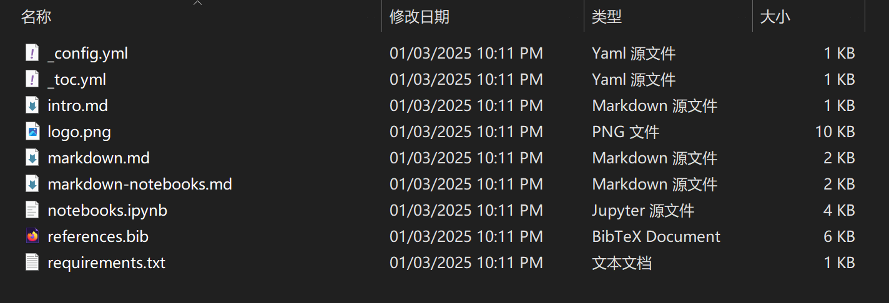
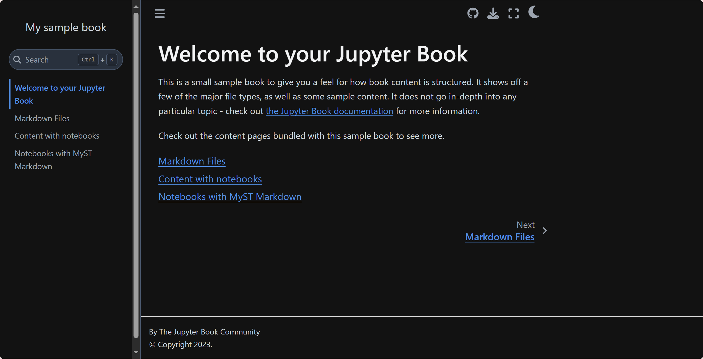
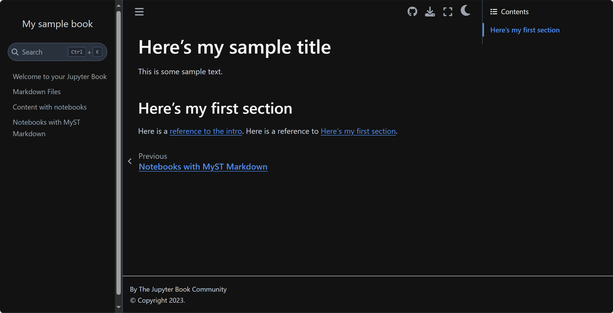

一、Jupyter Book 入门#
以下内容参考自Jupyter Book官方文档，结合自身实际操作总结完整流程。
1.1 Jupyter Book 安装#
首先需要安装 Jupyter Book，pip具体命令如下：
pip install -U jupyter-book
其次也可以使用conda命令进行生成，需要注意的是conda命令只能在powershell中使用。
conda install -c conda-forge jupyter-book
安装完成后，执行帮助命令来查看是否成功安装。
jupyter-book --help
将输出以下帮助信息：
Usage: jb [OPTIONS] COMMAND [ARGS]...
Build and manage books with Jupyter.
Options:
--version Show the version and exit.
-h, --help Show this message and exit.
Commands:
build Convert your book's or page's content to HTML or a PDF.
clean Empty the _build directory except jupyter_cache.
config Inspect your _config.yml file.
create Create a Jupyter Book template that you can customize.
myst Manipulate MyST markdown files.
toc Command-line for sphinx-external-toc.
1.2 Jupyter Book 构建的一般流程#
构建Jupyter Book大致可以分为以下三个步骤：
1.创建图书(Create your book’s context)。通过文件夹、文件和配置的集合来构建书籍的具体内容。
2.构建图书(Build your book)。使用jupyter book命令行，将内容转换为HTML、PDF等格式。
3.出版图书(Publish your book)。构建图书之后，在线发布图书分享给其他人。
以下三小节内容将以官网提供的模板书为例，熟悉完整流程。
1.3 Jupyter Book 创建模板书#
通过构建一个模板书，来对Jupyter Book的书籍结构有一个初步的认知。
Jupyter Book捆绑了一个轻量级示例书，以帮助使用者了解书籍的结构。
在通过构建一个模板书之前，建议先创建一个文件夹，并在powershell中进入这个文件夹来实现接下来的操作。
通过运行以下命令创建示例书籍：
jupyter-book create testbook
在官网中，Jupyter Book提供的命令中书籍名称为mynewbook，由于笔者在测试中已经创建了该书，因此以下过程均采取testbook为例。事实上两者并无区别。
输入上述命令行后，在创建的文件夹中将会出现testbook文件夹，其中包含如下文件：

接下来将在_config.yml配置文件和_toc.yml目录文件中，展开对模板书具体构成的介绍。
1.3.1 书籍配置文件(_config.yml)#
书籍的所有配置全部在_config.yml文件中，该文件为YAML格式。
在_config.yml文件中，使用者可以在该文件中为书籍定义元数据，添加书籍的logo以及打开不同的“交互式”按钮等等。
下面给出了模板书中的_config.yml文件示例：
title: My sample book
author: The Jupyter Book Community
logo: logo.png
execute:
execute_notebooks: force
bibtex_bibfiles:
- references.bib
...
其中：
title：定义书籍的标题，它将显示在左侧边栏中。（但我并没看到）
author：定义书籍的作者。
logo：定义书籍的logo，也将显示在左侧边栏中。
execute：包含用于控制执行和缓存的配置选项的集合。
execute_notebooks：“force” 指示Jupyter Book在每次构建书籍时强制执行任何计算内容。默认情况下，Jupyter Book 执行并缓存所有书籍内容。
bibtex_bibfiles：是定义Jupyter Book的书目文件的部分。此配置将激活书籍的引文。
更多关于配置文件的信息，请参考Jupyter Book配置文件。
1.3.2 目录文件(_toc.yml)#
Jupyter Book使用目录来定义书籍的结构。例如，书籍的章节、子章节等。
下面是模板书中_toc.yml目录文件的具体内容，与配置文件相同，其也是一个YAML格式的文件。
format: jb-book
root: intro
chapters:
- file: markdown
- file: notebooks
- file: markdown-notebooks
每个file都将对应书籍的一个文件。
_toc.yml使用jb-article或jb-book等格式进行排列。 root项被视为登陆页面（对于html构建），并用作 front matter（对于latex构建）。
对于jb-book，可以在yml文件中的chapters：部分下添加后续章节。（目前还没有完全搞懂如何添加二级标题至左侧的目录列中）
每个条目都与一个文件相关，它们应添加为不带扩展名的名称，并且是相对于图书的根文件夹。每个章节的标题将从文件中的标题推断出来。
更多关于目录文件的信息，请参考Jupyter Book目录文件
注：在修改目录文件之后，似乎无法通过删除文件的方式来刷新目录，需要重新构建书籍。
1.3.3 内容文件#
文本文件集合构成了图书的内容。这些文件可以是多种类型的文件之一，例如：markdown(.md)、Jupyter Notebook(.ipynb) 或reStructuredText(.rst)文件。
模板书对于上述三种类型的文件分别给出了一个示例：
一个markdown文件(
markdown.md)一个Jupyter Notebook文件(
notebooks.ipynb)一个MyST Markdown Notebook文件(
markdown-notebooks.md)
由于技术力有限，笔者对于上述文件的理解不深，在本书的写作过程中，笔者倾向于全部使用.ipynb格式文件来完成本书的写作。
接下来只简要介绍不同的文件类型。
Markdown files#
Markdown是一种使用额外的字符和语法来构建文本的方法，这些字符和语法赋予它额外的含义。
在这里给出一些常用的语法以供参考：
使用
``来表示带框文字使用
**加粗**来表示加粗使用
*斜体*来表示斜体使用
#来表示文章标题使用
<br>来表示换行使用
```来表示代码块
print("Hello World!")
使用
[文本](URL)来表示超链接，淡月疏星Xenon意(欢迎关注！)使用
来表示图片(需要现在对应的书籍根目录下创建images)
……
还有一些MyST Markdown中的指令，但这些指令在.ipynb文件中似乎无法呈现，此处不再举例。
Jupyter Notebook files#
Jupyter Book支持的另一种文件类型是Jupyter Notebook，以.ipynb结尾。
Jupyter Notebook结合了计算内容和叙述内容，即可以加入markdown的叙述内容，也能加入code代码块。
默认情况下，当 Jupyter Book构建(build)书籍时，将执行notebook文件并缓存其输出。在后续构建中，仅当文件页面的代码发生更改时，才会重新执行页面。
关于执行和缓存页面、代码输出以及交互式数据可视化等内容，笔者将在后续学习后更新。
MyST Markdown files#
MyST Markdown是一种基于Markdown的文件格式，它增加了对数学符号、角色和指令的支持。
在Jupyter Book中，MyST Markdown文件的扩展名是.md。
有关MyST Markdown笔记本的更多信息，请参阅完全用Markdown编写的笔记本。
1.4 Jupyter Book 构建图书#
添加了文件内容并完善了书籍配置之后，就可以构建(build)图书了。在命令行中使用jupyter-book build来构建图书。
目前Jupyter Book支持两种格式的书籍输出，分别是HTML网站和基于HTML网站导出的PDF格式文件。在本节中重点介绍HTML格式的书籍输出。
以前文提及的testbook文件为例，使用以下命令行来构建图书：
jupyter-book build testbook
或者进行简写：
jb build testbook
输出完成后，将会在testbook文件夹中观察到出现名为build的文件夹，进入其中的HTML文件夹后，即可以打开HTML格式的书籍。

先决条件：为了保证每个页面都能成功构建HTML，需要完整按照上述的步骤来进行操作。在testbook文件夹中，应当要有一个目录文件_toc.yml，一个配置文件_config.yml，以及一个notebook或者markdown文件的集合。
1.4.1 源文件与构建文件#
此时，文件夹中已经创建了Jupyter Notebook文件、Markdown文件和配置文件(包括_toc.yml和_config.yml)的组合。这些文件是源文件。
源文件包含Jupyter Book构建书籍所需的所有内容和配置。
此外，目前也已经在build文件夹中创建了书籍输出的集合。该文件夹包含了使用jb的build命令之后的所有输出，这些文件用于在浏览器中查看内容或与他人共享。
发布图书的最佳实践是为源文件和构建文件使用单独的分支。稍后将做详细介绍。
1.4.2 关于页面缓存#
默认情况下，Jupyter Book将仅为自上次构建书籍以来已更新的页面构建 HTML。
如果要强制Jupyter Book重新构建特定页面，可以编辑书籍文件夹中的相应文件，或删除_build/html文件夹中该页面的HTML。
还可以使用--all选项发出完全重建的命令。
jb build --all testbook
或者使用-clean将该书籍删去之后再重新构建
jb build clean testbook
1.4.3 预览构建的HTML#
可以直接在_build/html文件夹中查看HTML。
或者在浏览器中输入HTML所在的路径，例如file:///D:/JupyterBook/testbook/_build/html/intro.html。
1.4.4 创建自己的内容文件并输出#
创建自己的内容文件并输出大致可以分为以下三个步骤，此处参考官网给出的示例进行演示。
1.创建一个内容文件
在testbook文件夹中，创建一个名为mymarkdownfile.md的文件，在文件中编辑以下内容。# Here's my sample title This is some sample text. (section-label)= ## Here's my first section Here is a [reference to the intro](intro.md). Here is a reference to [](section-label).
在文件中给出了两种markdown的语法，它们都与交叉引用相关。
(section-label)=是附加到节标题的标签。它引用后面的任何标题，并允许稍后在文本中引用此标签。[link text](link-target)语法是在Markdown中指定链接的方式。在这里，作用是链接到另一个页面，以及在上面创建的标签。
2.将文件添加入目录文件中
在前文中已经创建了一个新文件，接下来需要将其添加入_toc.yml文件中。
在_toc.yml文件中添加一行，指向新文件。format: jb-book root: intro chapters: - file: markdown - file: notebooks - file: markdown-notebooks - file: mymarkdownfile
3.重新构建书籍
在重新构建书籍之前，请确保新文件和目录文件的修改都已被保存。
重新运行build命令即可。jb build testbook
新加入的文件页面如下所示：

交叉引用的展示:
跳转至“或者使用-clean”前方
不一定要引用到标题，可以是任何地方。
跳转至“Markdown Files”该节
1.5 Jupyter Book 发布图书#
为图书构建了HTML之后，可以进行在线托管。在官方教程中，介绍了如何使用GitHub Pages来在线发布(publish)图书。
1.5.1 为书籍创建在线仓库#
为了将托管的书籍和书籍的源文件相连接，需要将图书的源文件放在公共仓库中。
1.首先，登录 GitHub，然后进入 “create a new repository” 页面。
2.接下来，给在线仓库提供名称和描述。公开仓库，并不要使用README文件进行初始化。然后单击“Create repository”。
3.现在，将目前为空的在线仓库克隆到本地计算机上的某个位置上。通过命令行使用以下命令执行该操作：
git clone https://github.com/<my-org>/<my-repository-name>
其中，
<my-org>是指GitHub的名字，<my-repository-name>是指刚刚新创建的仓库的名称。
笔者在进行到上述克隆步骤时发现，并没有在本地下载GitHub。因此在此处提供一个GitHub下载的简单流程。
以笔者的GitHub账号和本书地址为例，命令行如下：git clone https://github.com/Hao-jieDai/OnlineFirst.git
由于目前的库是空的，因此会输出以下结果：
Cloning into 'OnlineFirst'... warning: You appear to have cloned an empty repository.
4.现在将书籍文件和文件夹复制到这个新克隆的存储库中。如果书籍文件名为
testbook，仓库名为onlinebook，命令行如下：cp -r testbook/* onlinebook/
5.现在需要同步本地和远程（即在线）仓库。可以使用以下命令执行此作：
cd onlinebook git add ./* git commit -m "adding my first book!" git push
关于Git的下载#
流程由Deepseek提供，根据实际操作进行完善。
1.下载Git安装程序 访问Git的官方网址 。
2.运行安装程序 下载的程序名为
Git-*.exe。根据以下步骤配置：选择组件：勾选所有选项（特别是 “Git Bash Here” 和 “Git GUI Here”）
选择默认编辑器：推荐选择 “Use Visual Studio Code as Git’s default editor”（如果安装了 VS Code）
调整 PATH 环境：选择 “Git from the command line and also from 3rd-party software”
选择 HTTPS 传输后端：使用默认的 “Use the OpenSSL library”
配置行尾符号转换：选择 “Checkout Windows-style, commit Unix-style line endings”
配置终端模拟器：选择 “Use MinTTY (the default terminal of MSYS2)”
其他选项：全部保持默认设置
3.完成安装 点击
install安装，安装完成后取消勾选”View Release Notes”，点击”Finish”。4.验证Git安装 根据笔者经验，安装完成后先重启下电脑，确保环境变量已经更新。
在命令行中验证Git是否安装完成。git --version
输出类似为：
git version 2.50.0.windows.1
5.配置Git 首次使用Git时需要认证用户名和邮箱，否则后续使用会报错。
在命令行中完成验证。git config --global user.name "Your Name" git config --global user.email "your.email@example.com"
1.5.2 使用 GitHub Pages 在线发布书籍#
通过刚刚的步骤，书籍的源文件已经被上传至GitHub存储库。这样，其他人可以公开查看书籍内容。
接下来将进行在线发布，使书籍以网站的形式可以被查看。
以下内容笔者并未完全理解，但通过以下步骤确实可以实现上述目标。
将GitHub Pages与构建的HTML一起使用的最简单方法是使用ghp-import包。ghp-import是一个轻量级Python软件包，可以轻松地将HTML内容推送到GitHub存储库。
ghp-import的工作原理是将构建的书籍的所有内容（即_build/html文件夹 ）复制到存储库中名为gh-pages的分支(branch)，然后将其推送到GitHub。ghp-import将自动为您创建并填充gh-pages分支。要使用ghp-import通过GitHub Pages在线托管书籍，请按照以下步骤操作：
1.安装
ghp-import。可以使用以下命令在命令行中安装它：pip install ghp-import
2.更新GitHub页面站点的设置,使用一个
gh-pages分支托管网站。3.从书籍根目录的main分支（应包含
_build/html文件夹）调用ghp-import并将其指向HTML文件，命令行如下：ghp-import -n -p -f _build/html
可能的输出如下所示：
Enumerating objects: 275, done. Counting objects: 100% (275/275), done. Delta compression using up to 12 threads Compressing objects: 100% (120/120), done. Writing objects: 100% (275/275), 2.11 MiB | 1.93 MiB/s, done. Total 275 (delta 106), reused 275 (delta 106), pack-reused 0 (from 0) remote: Resolving deltas: 100% (106/106), done. remote: remote: Create a pull request for 'gh-pages' on GitHub by visiting: remote: https://github.com/Hao-jieDai/OnlineFirst/pull/new/gh-pages remote: To https://github.com/Hao-jieDai/OnlineFirst.git * [new branch] gh-pages -> gh-pages
通常，书籍网站将在几分钟后可以通过以下URL在线查看：
https://<user>.github.io/<myonlinebook>/
以本书为例，本书的网站为：
https://hao-jiedai.github.io/OnlineFirst/
本地地址为：
[file:///D:/JupyterBook/OnlineFirst/_build/html/intro.html](file:///D:/JupyterBook/OnlineFirst/_build/html/intro.html)
1.5.3 书籍后续的更新#
要更新在线书籍，需要在仓库的main分支上更改图书的内容。
使用jb build testbook重新构建图书
和之前一样使用ghp-import -n -p -f _build/html将重新构建的HTML推送到gh-pages分支上。
根据测试上述步骤似乎行不通，只能从复制那一步重新做起。
每次更新的时候，应该构建的图书jb build OnlineFirst而不是本地版本。
同时会出现logo缺失的问题。似乎与logo的名字有关。
再次给出总结之后的更新流程
1.重新构建在线图书
jb build OnlineFirst
2.将更新后的书籍推送到GitHub
cd OnlineFirst git add ./* git commit -m "updating + date" git push
3.从书籍根目录的main分支（应包含
_build/html文件夹）调用ghp-import并将其指向HTML文件，命令行如下：ghp-import -n -p -f _build/html
1.6 Jupyter Book 示例项目#
Jupyter Book官网给出了一个迷你书的示例项目，在这里给出。
迷你书给出了一些功能展示：
Jupyter Notebook 风格的输入和输出
citations 引文
numbered equations 编号方程
带标题和交叉引用的编号图
构建示例书的步骤如下：
1.确保安装了最新版的Anaconda Python。
2.将示例书源克隆到本地。
git clone https://github.com/executablebooks/quantecon-mini-example cd quantecon-mini-example
3.从environment.yml文件安装运行此特定示例中的代码所需的Python库。这包括最新版本的Jupyter Book：
conda env create -f environment.yml conda activate qe-mini-example
4.运行并构建示例书。
jupyter-book build ./mini_book
5.查看书目，地址如下：
mini_book/_build/html/index.html
过程繁琐但不复杂，感兴趣的可以直接按照上述步骤操作。